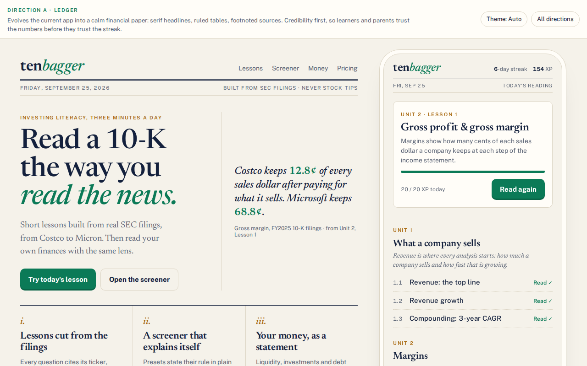
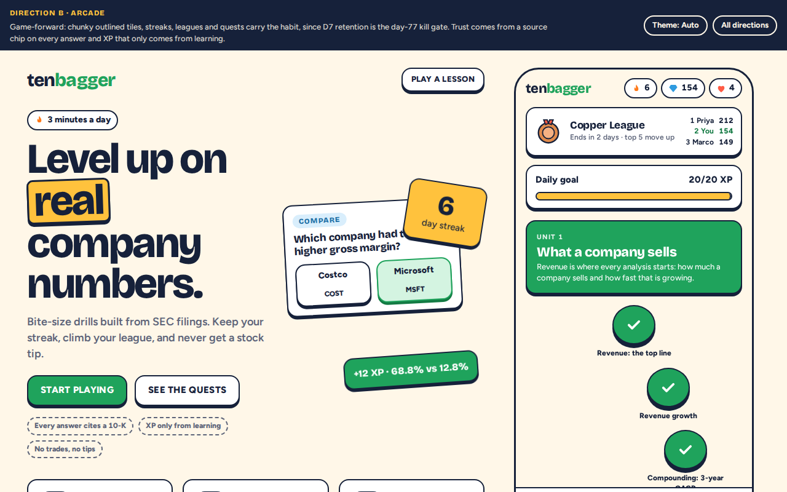
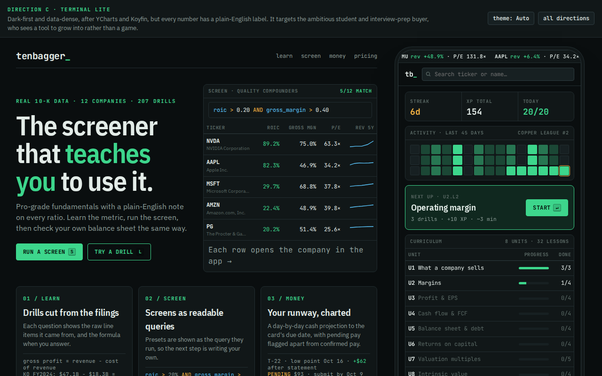

Each prototype has a clickable phone app (Learn path, a playable 3-question lesson, a screener with presets, a company page and the Money hub) next to a landing hero, and works in light and dark. Lesson, screener and company numbers are real, from data/companies.json and data/lessons.json. Money hub numbers belong to a fictional persona, Alex, 20.

An evolution of the current app into a calm financial paper: serif headlines, ruled tables, footnoted sources.
Open prototype →
Bold and game-forward: streaks, leagues, Screener Quests and hard-shadow tiles, with a source chip on every answer.
Open prototype →
Dark-first and data-dense after YCharts and Koyfin, with a plain-English note on every number. Built for the ambitious student.
Open prototype →| Direction | Best for | Pros | Cons |
|---|---|---|---|
| A · Ledger | Credibility with students, parents and teachers (the Edu tier); the “read a 10-K” promise. |
|
|
| B · Arcade | Habit and D7 retention (the day-77 gate), beginners, share cards and virality. |
|
|
| C · Terminal Lite | Ambitious students, finance-club and interview-prep buyers; the screener as the “arena”. |
|
|
These are separate directions, but the parts combine. A common path is A's type and palette as the base, with B's streak, league and quest components in a quieter style, and C's dense table and chart treatment reserved for Pro screener and company views.